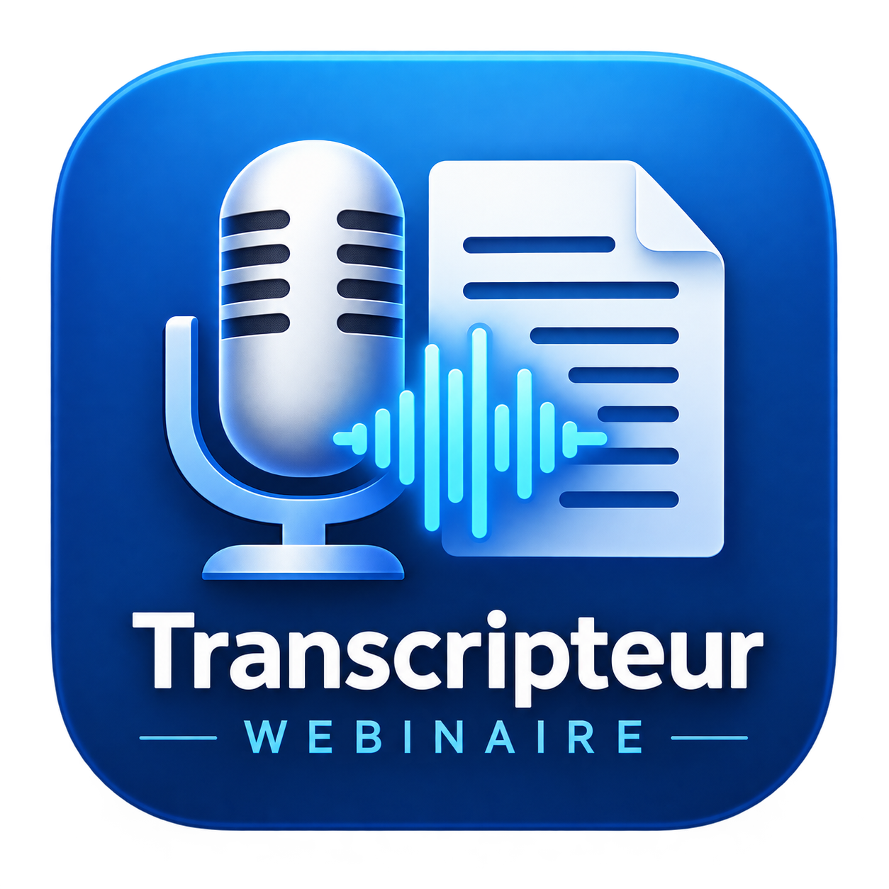

Transformez vos webinaires en texte.
Enregistrez le son interne de votre PC ou importez un fichier audio/vidéo, puis obtenez une transcription française directement sur votre ordinateur. Aucun compte requis.

Transcripteur Webinaire 4.2Transcription locale · Windows · Français · Gratuit
Fonctionnalités principales
Une application pensée pour les réunions, formations, conférences et webinaires.
Son interne du PC
✓Enregistrement direct du son joué par Windows.
Import audio et vidéo
✓Importez vos fichiers existants pour les transcrire.
Transcription locale
✓Whisper fonctionne directement sur votre ordinateur.
Historique
✓Retrouvez vos anciennes transcriptions localement.
Export horodaté
✓Exportez le texte avec les temps de début et de fin.
Profils de qualité
✓Rapide, Équilibré ou Précis selon votre besoin.
Respect de la confidentialité
Le logiciel fonctionne principalement en local. Aucun compte n'est nécessaire.
Vos fichiers restent chez vous
Les enregistrements et transcriptions sont enregistrés sur votre ordinateur.
Pas de compte
Aucun email, mot de passe ou profil utilisateur n'est requis.
Pas de paiement
La version 4.2.0 est gratuite et n'intègre aucun système de paiement.
Sécurité V4.2
La version 4.2 ajoute plusieurs contrôles pour rendre l'import et le stockage plus robustes.
Validation des médias
Les types de fichiers importés sont vérifiés avant traitement.
Historique contrôlé
L'application limite l'ouverture de l'historique aux transcriptions locales attendues.
Contrôle d'intégrité
L'empreinte SHA-256 officielle est publiée pour vérifier l'installateur.
Téléchargement
Transcripteur Webinaire 4.2.0
Windows 10 / Windows 11 · Gratuit
SHA-256 officiel :
97979579C064DC4FFE651E0D22C061DF90C6DDBA9BBC75AFA3459E049D8B817A
Installation
Utilisez le bouton de téléchargement ci-dessus.
Suivez les étapes affichées par Windows.
Utilisez le raccourci créé sur le Bureau ou dans le menu Démarrer.